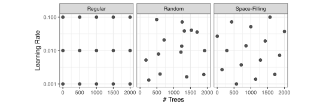
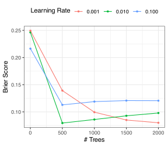
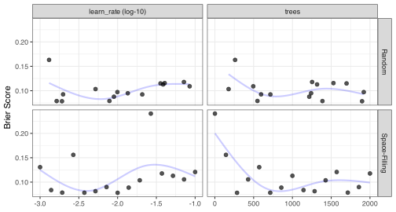
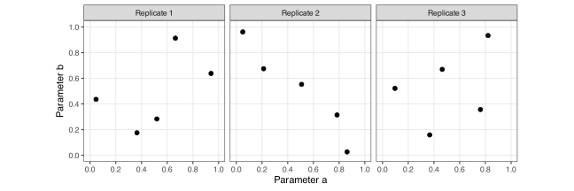
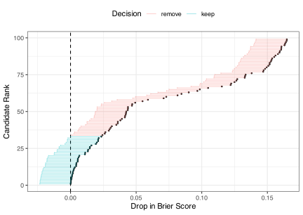
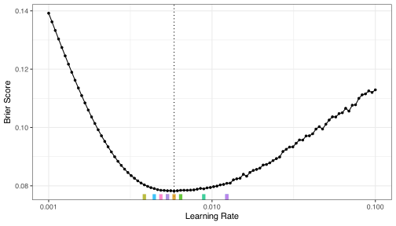
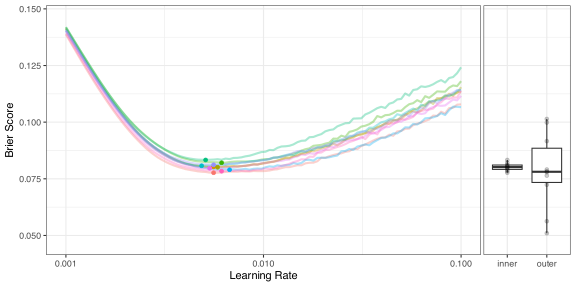

11 Grid Search
Grid search is a method to optimize a model pipeline’s tuning parameters. It creates a pre-defined set of candidate values and computes performance for each. From there, the numerically best candidate could be chosen, or the relationship between the tuning parameter(s) and model performance can be inspected to see if the model might benefit from additional optimization.
Suppose there is a single tuning parameter, as in the \(n_{min}\) example of Section 9.3; each candidate takes a scalar value (quantitative or qualitative). For other models, there are multiple tuning parameters. For example, support vector machine models can have two or three tuning parameters, the Elastic Net model has two tuning parameters, and the boosted tree model has multiple tuning parameters. We’ll look at two of the boosted tree parameters in detail below.
The previous chapter demonstrated that using external data to evaluate the model is crucial (be it resampling or a validation set). Grid search has no free lunch: we cannot simply fit the model to each candidate set and evaluate them by simply re-predicting the same data.
Algorithm 11.1 formally describes the grid search process. For a model with \(m\) tuning parameters, we let \(\Theta\) represent the collection of \(s\) candidate values. For each specific combination of parameters (\(\theta_j\)), we resample the model to produce some measure of efficacy (e.g., \(R^2\), accuracy, etc.)1. From there, the best value is chosen, or additional work is carried out to find a suitable candidate.
\begin{algorithm} \begin{algorithmic} \State $\mathfrak{D}^{tr}$: training set of predictors $X$ and outcome $y$ \State $B$: number of resamples \State $M(\mathfrak{D}^{tr}, B)$: a mapping function to split $\mathfrak{D}^{tr}$ for each of $B$ iterations. \State $f()$: model pipeline \State $\Theta$: Parameter set ($s \times m$) with candidates $\theta_j$ \For{$j=1$ \To $s$} \State Generate $\hat{Q}_{j} =$ \Call{Resample}{$\mathfrak{D}^{tr}, f(\cdot;\theta_j), M(\mathfrak{D}^{tr}, B)$} corresponding to candidate $\theta_j$. \EndFor \State Determine $\hat{\theta}_{opt}$ that optimizes $\hat{Q}_{j}$. \end{algorithmic} \end{algorithm}
To demonstrate, this chapter will initially focus on grids for a boosted tree model with two tuning parameters. Recall that a boosted tree is a collection of individual decision trees created sequentially. One parameter related to the process of creating the ensemble is the learning rate: the next tree uses information from the last tree to improve it. An important parameter is how much, or how fast it learns. It could be that some data sets need a large number of trees that evolve slowly (i.e., low learning rate) to find an optimal value of the performance metric. Alternatively, other data sets require fewer trees that change rapidly for optimal predictive performance. The learning rate parameter must be greater than zero, and is typically in the range of 10-5 to 10-1. Because the range of this parameter is very large, it is best conceptualized in log units.
We’ll illustrate different strategies of grid search using this model setup with varying configurations of the learning rate and the number of trees in the ensemble.
There are two main classes of grids: regular and irregular. We can view generating a collection of candidate models as a statistical design of experiments (DOE) problem (Box, Hunter, and Hunter 1978). There is a long history of DOE, and we’ll invoke relevant methods for each grid type. Santner, Williams, and Notz (2018) and Gramacy (2020) have excellent overviews of the DOE methods discussed in this chapter.
The following two sections describe different methods for creating the candidate set \(\Theta\). Subsequent sections describe strategies for making grid search efficient using tools such as parallel processing and model racing.
11.1 Regular Grids
A regular grid starts with a sequence or set of candidate values for each tuning parameter and then creates all combinations. In statistics, this is referred to as a factorial design. The number of values per tuning parameter does not have to be the same.
To illustrate a regular grid, we’ll use five values of the number of trees (1, 500, 1000, 1500, and 2000) and three values of the learning rate (10-3, 10-2, and 10-1). This grid of 15 candidates is shown in Figure 11.1. The grid covers the entire space with significant lacuna in between.
We’ll use the simulated training set in Section 9.1 with the same 10-fold cross-validation scheme described there. Once again, Brier scores were used to measure how well each of the 15 configurations of boosted tree model predicted the data. Figure 11.2 shows the results: a single tree is a poor choice (due to underfitting), and there are several learning rate values that work well. Even though this is not a diverse set of candidate values, we can probably pick out a reasonable candidate with a small Brier score, such as 500 trees and and a learning rate of 10-2 (although there are a few other candidates that would be good choices).

The pattern shown in this visualization is interesting: the trajectory for the number of trees is different for different values of the learning rate. The two larger learning rates are similar, showing that the optimal number of trees is in the low- to mid-range of our grid. The results for the smallest learning rate indicate that better performance might be found using more trees than were evaluated. This indicates that there is an interaction effect in our tuning parameters (just as we saw for predictors in Section 8.1). This might not affect how we select the best candidate value for the grid, but it does help build some intuition for this particular model that might come in handy when tuning future models.
Gaining intuition is much easier for regular grids than other designs since we have a full set of combinations. As we’ll see shortly, this interaction is very hard to see for a space-filling design.
The primary downside to regular grids is that, as the number of tuning parameters increases, the number of points required to fill the space becomes extremely large (due to the curse of dimensionality). However, for some models and pre-processing methods, regular grids can be very efficient despite the number of tuning parameters (see the following section that describes the “submodel trick”).
11.2 Irregular Grids
Irregular grids are not factorial in nature. A simple example is a random grid where points are randomly placed using a uniform distribution on an appropriate range for each tuning parameter. A design of size 15 is shown in Figure 11.1. There are some gaps and clustering of the points, but the space for each individual dimension is covered well. The tuning results are shown in the top panels of Figure 11.3. Because it is an irregular design, we can’t use the same visualization as in Figure 11.2. Instead, a “marginal” plot is shown, where each numeric tuning parameter is plotted against performance in a separate panel.
The top left panel suggests that a very small learning rate is bad, but otherwise, there is not a strong trend. For the number of trees (in the top right panel), a small number of trees should be avoided, and perhaps the maximum number tested would be a good choice. From this plot, it is impossible to discover the interaction effect seen with the regular grid. However, this marginal plot is the main technique for visualizing the results when there are a moderate to large number of tuning parameters. The numerically best candidate was not too dissimilar from the regular grid: 1,898 trees and and a learning rate of 10-2.7

Another type of irregular grid is a space-filling design (Joseph 2016), where the goal is to make sure that the tuning parameter space is covered and that there is minimal redundancy in the candidate values. There are a variety of methods for achieving this goal.
For example, Figure 11.1 shows a 15 point Audze-Eglais space-filling design. The space is covered more compactly than the regular design of the same size and is much more uniform than the 15 point random design. The lower panels of Figure 11.3 show the tuning results. The results are somewhat cleaner than the random grid results but show similar trends. Here, the numerically best candidate was: 286 trees and and a learning rate of 10-2.
There are many types of space-filling designs, and it is worth taking the time to take a quick tour of some of them.
The Latin hypercube design (LHD) is the most popular method for constructing space-filling designs (Husslage et al. 2011; Viana 2016). These designs have a simple definition. Suppose our hyperparameter space is rectangular and partitioned into smaller (hyper)cubes. From this, a LHD is a set of distinct points where no one dimension has multiple values in any bins2. We desire candidates that fill the space of each parameter and are not close to one another.
The most basic approach to creating a Latin hypercube design is random sampling (Mckay, Beckman, and Conover 2000). If there are \(m\) parameters and we request \(s\) candidate values, the parameter space is initially divided into \(s^m\) hypercubes of equal size. For each tuning parameter, \(s\) regions in its dimension are selected at random, and a value is placed in this box (also at random). This process repeats for each dimension. Suppose there are ten bins for a parameter that ranges between zero and one. If the first design point selects bin two, a random uniform value is created in the range [0.1 0.2). Figure 11.4 shows three such designs, each generated with different random numbers.

Technically, these designs cover the space of each predictor uniformly. However, large multivariate regions can be empty. For example, one design only samples combinations along the diagonal. Additional constraints can make the design more consistent with our desires.
For example, we could choose points to maximize the minimum pairwise distances between the candidates. These designs are usually referred to as MaxiMin designs (Pronzato 2017). Comparing the two irregular designs in Figure 11.1, the random grid has a maximum minimum distance between candidates of 0.09. In contrast, the corresponding space-filling design’s value (0.26) is 2.9-fold larger3. The latter design was optimized for coverage, and we can see far less redundancy in this design.
A similar method, initially proposed by Audze and Eglais (1977), maximizes a function of the inverse distances between \(s\) candidate points:
\[ criterion = \sum_{i=1}^s \sum_{j=1,\;i\ne j}^s\frac{1}{dist(\theta_i, \theta_j)^2} \]
Bates, Sienz, and Toropov (2004) devised search methods to find optimal designs for this criterion.
Some other space-filling designs of note:
Maximum entropy sampling selects points based on assumptions related to the distributions of the tuning parameters and their covariance matrix (Shewry and Wynn 1987; Joseph, Gul, and Ba 2015).
Uniform designs (Fang et al. 2000; Wang, Sun, and Xu 2022) optimally allocate points so that they are uniformly distributed in the space.
While these methods can be generally constructed by sampling random points and using a search method to optimize a specific criterion, there has been scholarship that has pre-optimized designs for some combination of the number of tuning parameters and the requested grid size.
The advantage of space-filling designs over random designs is that, for smaller designs, the candidates do a better job covering the space and have a low probability of producing redundant points. Also, it is possible to create a space-filling design so that the candidates for each numerical parameter are nearly equally spaced (as was done in Figure 11.1).
Many designs assume that all the tuning parameter values are quantitative. That may not always be the case. For example, K-nearest neighbors can adjust its predictions by considering how far the cost are from a new point; more distant points should not have the same influence as close cost. A weighting function can be used for this purpose. For example, weights based on the inverse of the distance between neighbors may produce better results. Equal weighting is often called a “rectangular weighting” function. The type of algebraic function used for weighting is a qualitative tuning parameter.
A simple workaround for creating a space-filling design is to repeat the unique parameter values as if they were \(s\) distinct values when making the design. This allows them to be used with a Latin hypercube design and any space-filling design that uses this approach is not technically optimal. Practically speaking, this is an effective approach for tuning models. However, there are sliced LHD that can accomplish the same goal (Qian 2012; Ba, Myers, and Brenneman 2015).
We recommend space-filling designs since they are more efficient than regular designs. Regular designs have a lot of benefits when using an unfamiliar modeling methodology since you will learn a lot more about the nuances of how the tuning parameters affect one another.
11.3 Efficient Computations for Conventional Grid Search
The computational cost of grid search can become large, depending on the resampling strategy and the number of candidates under consideration. In our example, a total of 150 boosted tree models are evaluated (5 values of the number of trees, 3 values of the learning rate, and 10-fold cross-validation) before determining which candidates are most favorable to our data.
We’ll look at three approaches to making grid search more efficient. One method (submodels) happens automatically for some types of models, another approach (parallel processing) uses software engineering tools, and the last tool (racing) is a statistical solution.
To illustrate these more efficient search approaches, a 100 grid point space-filling design will be used with a large parameter range (1 to 3000 trees) and learning rates between 10-5 and 10-1.
11.3.1 Submodels
Let’s begin by understanding the submodel trick. For some models a single training model can be used to predict many tuning parameter candidates. For example, the boosted tree model that we have been using creates a sequential ensemble of decision trees, each depending on the previous. Suppose that a boosting model with 3,000 trees is created. Most implementations of boosted trees can use this model to predict the outcomes of any smaller ensemble size. Therefore, we only need to build the boosted tree model using the largest number of trees for each specific combination of the remaining tuning parameters. For a regular grid, this can effectively drop a dimension of the computations. Depending on the model and grid, the speed-up for using this approach can be well into double digits.
Some different models and pre-processors can have this quality, including the glmnet model (?sec-penalized-logistic-regression), partial least squares (Section 7.2.3), principal component feature extraction (Section 7.2.1), and others.
Unfortunately, irregular designs cannot exploit the submodel trick since they are not factorial in nature. A hybrid design could be used where a dense sequence of \(s_1\) parameter values is created for the tuning parameter associated with submodels and a separate space-filling design of size \(s_2\) for the other parameters. These two grids can be crossed so that the space-filling design is replicated for each value of the submodel parameter. This produces \(s_1\times s_2\) grid points but, effectively, only \(s_2\) models are fit.
For our larger grid, we created a similar regular grid of 100 points with the same expanded ranges of parameters. There were 10 unique, evenly spaced values for both parameters. To evaluate this grid, we only need to train 10 models. Compared to the analogous space-filling design, the regular grid was 3.8 times faster to evaluate.
11.3.2 Parallel Processing
Fortunately, none of the 1,000 models in our large grid depend on one another and can be computed separately. Since almost all modern computers have GPUs and multiple CPUs, we can break the computations into different “chunks” of work and execute them simultaneously on distinct processors (or separate computers entirely). The parallel processing of models can significantly reduce the time it takes to tune using grid search.
For example, consider the space-filling designs with 15 candidates evaluated across 10 resamples. We spread the 150 model fits across 10 worker processes (on the same computer). Despite the meager computation costs of training each boosted tree, there was still a 6.4-fold speedup (26s versus 4.1s) when run in parallel.
However, there are some important nuances that we should consider before initiating parallel processing.
First, it is an excellent idea to parallelize the “longest loop” (literally or figuratively). Looking back at Algorithm 11.1, there is a loop across the \(s\) candidates in line 6. Line 7 contains the resampling loop across \(B\) resamples. If the data set is large, it may be optimal to invert the loop where we parallel process across the \(B\) resamples and execute the \(s\) models within each. Keeping each resample on a single worker means less input/output traffic across the workers. See Kuhn and Silge (2022) Section 13.5.2. Alternatively, if the data are not large, it could be best to “flatten” the two loops into a single loop with \(s\times B\) iterations (with as many workers as possible).
Additionally, if expensive preprocessing is used, a naive approach where each pipeline is processed in parallel might be counterproductive because we unnecessarily repeat the same preprocessing. For example, suppose we are tuning a supervised model along with UMAP preprocessing. By sending each of the \(s\) candidates to a worker, the same UMAP training occurs for each set of candidates that correspond to the supervised model. Instead, a conditional process can be used where we loop across the UMAP tuning parameter combinations and, for each, run another loop across the parameters associated with the supervised model.
Another consideration is memory. If the data used to train and evaluate the model are copied for each worker, the number of workers can be restricted to fit within system memory. A well thought out process can avoid this unnecessary restriction.
When we understand the computational aspects of parallel processing, we can almost always use it to greatly reduce the time required for model tuning.
11.3.3 Racing
A third way we can improve the model tuning process is through Racing (Maron and Moore 1997). This technique adaptively resamples the data during grid search. The goal is to cull tuning parameter combinations that have no real hope of being optimal before they are completely resampled. For example, in our previous tuning of the boosting model using a regular grid, it is clear that a single tree performs very poorly. Unfortunately, we will not know this until all the computations are finished.
Racing tries to circumvent this issue by doing an interim statistical analysis of the tuning results. From this, we can compute a probability (or score) that measures how likely each candidate will be the best (for some single metric). If a candidate is exceedingly poor, we usually can tell that after just a few resamples4.
There are a variety of ways to do this. See Kuhn (2014), Krueger, Panknin, and Braun (2015), and Bergman, Purucker, and Hutter (2024). The general process is shown in Algorithm 11.2. The resampling process starts normally for the first \(B_{min}\) resamples. Lines 7-12 can be conducted in parallel for additional computation speed. After the initial resampling for all candidates, the interim analysis at iteration \(b\) results in a potentially smaller set of \(s_b\) candidates. Note that parallel processing can be incorporated into this process for each loop and the speed-up from using submodels also occurs automatically.
At each resampling estimate beyond the first \(B_{min}\) iterations, the current candidate set is evaluated for a single resample, and the interim analysis potentially prunes tuning parameter combinations.
\begin{algorithm} \begin{algorithmic} \State $\mathfrak{D}^{tr}$: training set of predictors $X$ and outcome $y$ \State $B$: number of resamples \State Initial number of resamples $1 \lt B_{min} \lt B$ executed prior to analysis \State $M(\mathfrak{D}^{tr}, B)$: a mapping function to split $\mathfrak{D}^{tr}$ for each of $B$ iterations. \State $f()$: model pipeline \State $\Theta$: Parameter set ($s \times m$) with candidates $\theta_j$ \For{$j=1$ \To $s$} \For{$b=1$ \To $B_{min}$} \State Generate $\hat{Q}_{jb} =$ \Call{Resample}{$\mathfrak{D}^{tr}, f(\cdot;\theta_j), M_b(\mathfrak{D}^{tr}, B)$} \EndFor \State Compute $\hat{Q}_{j} = 1/B_{min}\sum_b \hat{Q}_{jb}$. \EndFor \State Eliminate candidates to produce $\Theta^b$ ($s_b \times m$) \For{$b = B_{min} + 1$ \To $B$} \For{$j=1$ \To $s$} \State Generate $\hat{Q}_{jb} =$ \Call{Resample}{$\mathfrak{D}^{tr}, f(\cdot;\theta_j), M_b(\mathfrak{D}^{tr}, B)$} \State Update candidate subset $\Theta^b$ by applying the filtering analysis \Endfor \Endfor \State Determine $\hat{\theta}_{opt}$ that optimizes $\hat{Q}_j^k$. \end{algorithmic} \end{algorithm}
The details are in the analysis used to discard tuning parameter combinations. For simplicity, we’ll focus on a basic method that uses a form of analysis of variance (ANOVA), a standard statistical tool for determining whether there are differences between conditions (Kutner, Nachtsheim, and Neter 2004). In our context, the conditions are the tuning parameter candidates; we ignore their values and treat them as qualitative samples from the distribution of all possible tuning parameter combinations. The ANOVA model uses the candidate conditions as the predictor and the metric of choice as the numeric outcome.
There are two statistical considerations that we need to understand when using an ANOVA model for evaluating Racing results.
First, the ANOVA model is used for statistical inference. Specifically, we’ll use it to compute confidence intervals on differences in performance. This means that the probabilistic assumptions about our data matter. The ANOVA method requires that the errors follow a Gaussian distribution. That distribution can be strongly influenced by the distribution of the outcome, and, in our case, this is a performance metric. Previously, we used the Brier score, which has non-negative values and might be prone to follow a right-skewed statistical distribution. However, each resampled Brier score is the average of differences, and the Central Limit Theorem suggests that as the number of data points used to compute the score increases, the sampling distribution will become more Gaussian. If we use this approach to assess parameter candidates, then we should check the normality assumptions of the errors.
The second statistical complication is related to the resamples. Basic ANOVA methods require the data to be independent of one another, which is definitely not the case for resampling results. A “within-resample” correlation occurs since some resamples are “easier” to predict than others. This means that the metrics associated with each resample are more similar to one another than to the metrics from other resamples.
This extra correlation means that a simple ANOVA model cannot be used. Instead, our interim analysis should instead use a hierarchical random effects model. This is the same methodology used in Section 6.4.3 for effect encodings. We’ll treat our set of resamples as a random sample of possible resampling indices. The ANOVA model itself is:
\[ Q_{ij} =(\beta_0 + \beta_{0i}) + \beta_1x_{i1} + \ldots + \beta_{s-1}x_{i(s-1)}+ \epsilon_{ij} \tag{11.1}\]
for \(i=1,\ldots, B\) resamples and \(j=1, \ldots, s\) candidates. This random intercept model assumes that the ranking of candidates is the same across resamples and only the magnitude of the pattern changes from resample to resample.
This model’s form is the reference cell parameterization discussed in Section 6.2. For each interim analysis, the reference cell will be set to the current best candidate. This means that the \(\hat{\beta}_j\) parameter estimates represent the loss of performance relative to the current best. A one-sided confidence interval is constructed to determine if a candidate should be removed. We can stop considering candidates whose interval does not contain zero.
To demonstrate the racing procedure, we re-evaluated our larger a space-filling design. The order of the folds was randomized, and after 3 resamples, the ANOVA method was used to analyze the results. Figure 11.5 shows the one-sided 95% confidence intervals for the loss of Brier score relative to the current best configuration (2030 trees and a learning rate of 10-2.78). Sixty-Six were eliminated at this round.

In the end, the racing process eliminated all but 7 candidates. The process eliminated candidates at iterations three (66 configurations), four (14 configurations), five (7 configurations), six (1 configuration), seven (2 configurations), eight (2 configurations), and nine (1 configuration). In all, 404 models were fit out of the possible 1,000 (40.4%). The numerically best candidate set for racing and basic grid search were the same: 576 trees and and a learning rate of 10-2.3.
The model in Equation 11.1 allows us to estimate the within-resample correlation coefficient. This estimates how similar the performance metric values are to one another relative to values between resamples. In our example, the estimate of within resample correlation is 0.6, and is a good example of why we should use Equation 11.1 when culling parameter candidates.
In summary, racing can be an effective tool for screening a large number of models while using comprehensive grids.
11.4 Optimization Bias and Nested Resampling
In the last section, we found that the numerically best candidate was 576 trees and and a learning rate of 10-2.3. The corresponding resampling estimate of the Brier score was 0.0783 with a standard error of 0.0053. If someone were to ask us how well the optimal boosted tree performs, we would probably give them these performance estimates.
However, there is an issue in doing so that may affect our decision for selecting the optimal tuning parameters. We are using grid search and resampling to find the best combination of parameters and to estimate the corresponding performance. The problem is that we don’t know how accurate or precise the estimate of the optimal candidate may be. In some situations, this dual use of the model tuning process can introduce optimization bias where, to some degree, our performance statistics are optimistic.
This issue has been studied extensively in the high-dimensional biology literature, where there could be dozens of samples but thousands of predictors. In this case, feature selection is of paramount importance. However, the process of selecting important predictors in this situation can be very difficult and often leads to unstable models or preprocessing methods that overfit the predictor set to the data. Discussions of these issues can be found in Varma and Simon (2006), Boulesteix and Strobl (2009), Bischl et al. (2012), and Bernau, Augustin, and Boulesteix (2013).
In this section, we’ll introduce a few methods to quantify and correct for optimization bias. These approaches are not specific to traditional grid search; they can be used with racing, iterative search, or any algorithm that we use to optimize a model. Some of the concepts can be difficult and, for this reason, we’ll use a simplified grid search scenario. Let’s optimize our boosted tree by fixing the number of boosting iterations to 500 and only optimize the learning rate. But the tools that we are about to discuss are not limited to a single tuning parameter. Simplifying the task in this way allos us to visualize and explain the process5.
Using the same 10-fold cross-validation scheme, Figure 11.6 shows the results of a conventional grid search over the learning rate where 100 values of that parameter were evaluated. As usual, the line indicates the average of the Brier scores produced by the 10 assessment sets. The results of this process indicates that the smallest Brier score is achieved with a learning rate of 10-2.23. The Brier score that corresponds to this tuning parameter value is estimated to be 0.0782 with corresponding standard error of 0.00536.

How can we estimate the potential bias in the process that led to this performance metric? Tibshirani and Tibshirani (2009) describes a simple analytical estimator applicable when multiple resamples are used to estimate performance. First, we obtain the performance estimates corresponding to the optimal tuning parameter candidate within each fold. Let’s call these \(\hat{Q}_j^*\) (where \(j=1\ldots B\)). They are represented in Figure 11.6 as the colored “rug” lines at the bottom of the figure. We know that our conventional analysis of this grid search finds that a learning rate of 10-2.23 to be optimal. We can find the metric values associated with the global optimum for each resample (denoted as \(\hat{Q}_j^{opt}\)). For each resample, we now have matched performance estimates for the local optima as well as the global optimum. The difference between these values is an estimate of the bias in optimization. If different resamples have very different optimal performance metrics compared to the optimal performance determined using the averages of the resamples (as shown in Figure 11.6), bias can increase. The estimate of the bias is then:
\[\widehat{bias} = \frac{1}{B}\sum_{j=1}^B\left[\hat{Q}_j^{opt} - \hat{Q}_j^*\right]\] For this particular example, the bias is fairly small (0.000931 with standard error 0.000304). To correct the conventional estimator, we add the bias; the Brier score is adjusted from 0.0782 to 0.0791. A more complex analytical method can be found in Tibshirani and Rosset (2019).
We can also estimate optimization bias with more complex resampling schemes. Recall that the issue is that we are overextending the conventional resampling scheme by doing too much with the same data (i.e., estimating overall performance assessment and the optimal performance value). Nested resampling (Varma and Simon 2006; Boulesteix and Strobl 2009) prevents this overuse by using two layers of resampling: the “inner resamples” are used to estimate the optimal candidate values, and the “outer resamples” estimate performance at those values.
For example, our current resampling scheme is 10-fold cross-validation. Since the training set has 2,000 samples, each fold uses 1,800 to fit the model and a separate 200 for assessment. Nested resampling would create 10 more independent resampling schemes within each of the 1,800-point analysis sets. If we once again used 10-fold cross-validation for the inner resamples, each would contain 10 analysis sets of size 1,620 with corresponding assessment sets of 180 data points.
The process starts with the inner resamples. The same model tuning procedure is used (basic grid search in our example), and each of the inner resamples estimates its own optimal candidate \(\hat{\theta}_k\). The outer resample takes this candidate value and estimates its performance using the assessment sets from the outer resampling loop. These outer estimates, whose data were never used to tune the model, are averaged to produce the nested resampling estimate of performance.
Consider Figure 11.7. The colored lines in the left-hand panel show the results of the 10 inner resamples. Each line is made up of the averages of the inner 10 assessment sets of size 180. The filled circles along these lines indicate the optimal learning rate for that inner resample. Each outer resample takes its corresponding learning rate, trains that model using its analysis set of 1,800 points, and computes performance using its 200 assessment samples. These 10 statistics are averaged to get the final performance estimate, which should be free of any optimization bias.

We can see that the resample-specific optimal learning rates vary but are within a consistent region. There are a few resamples that found the same optimal value. There is some variation in the y-axis too; different assessment sets produce different values. The standard error of these inner statistics, 0.000537, is much smaller than the value of the conventional estimate (0.00536).
The panel on the left shows boxplots of the Brier scores for the inner resamples and the corresponding outer resample estimates. The standard error of the outer resamples is very similar to the the level of noise in the conventional estimate.
In the end, the nested resampling estimate of the Brier score was estimated as 0.0784; a value very close to the single 10-fold cross-validation result shown in Figure 11.6.
It is important to emphasize that nested resampling is for verification, not optimization. It provides a better estimate of our model optimization process; it does not replace it.
We might best communicate the results of nested resampling like this:
We tuned the learning rate of our boosted classification tree using grid search and found that a rate of 10-2.23 to be best. We think that this model has a corresponding Brier score, measured without optimization bias, of 0.0784.
We can look at the candidates produced by the inner resamples to understand the stability of the optimization process and potentially diagnose other issues. We would not choose “the best” inner resampling result and move forward with its candidate value6.
It is a good idea to use nested resampling when the training set is small, the predictor set is very large, or both. The lack of significant bias in the analysis above does not discount the problem of optimization bias. It exists but can sometimes be within the experimental noise.
It is a good idea to choose an inner resampling scheme that is as close as possible to the single resampling scheme that you used for optimization. The outer scheme can vary depending on your needs. Care should be used when the outer resampling method is the bootstrap. Since it replicates training set points in its analysis sets, the inner resamples need to use the unique rows of the original training set. Otherwise the same data point might end up in both the inner analysis and assessment sets.
The primary downside to nested resampling is the computational costs. Two layers of resampling have a quadratic cost, and only the inner resamples can be executed in parallel. Using 10 workers, the analysis in Figure 11.7 took 6.6-fold longer to compute than the basic grid search that produced Figure 11.6.
11.5 Setting Parameter Ranges
Specifying the range of parameters used to define the grid may involve some guesswork. For some parameter types, there is a well understood and defined range. For others, such as learning rate, there is a lower bound (zero) and a loosely defined upper bound mostly based on convention and prior experience. For grids, we want to avoid configurations with few unique values and a wide range. This might not sample the section of the parameter space that includes nonlinearity and the region of optimal results. Figure 9.6 shows an example of this for the learning rate. The initial grid included three points that missed the regions of interest. Figure 9.5 did a better job with more grid points. In high dimensional parameter space, the likelihood of a poor grid increases, especially for relatively “small” grid sizes.
We often envision the relationship between a predictor and model performance as being a sharp peak. If we cannot find the pinnacle, the model optimization would fail. Luckily, as seen in Figure 11.7, there are often substantial regions of parameter space with good performance. Model optimization may not be superficially easy but it is often not impossible. We only need to sample the optimal region once to be successful.
If we worry that our tuning grid did not produce good results, another strategy is to increase the parameter ranges and use an iterative approach that can naturally explore the parameter space and let the current set of results guide the exploration about the space. These methods are discussed in the next chapter.
Chapter References
Audze, P, and V Eglais. 1977. “New Approach to Planning Out of Experiments.” Problems of Dynamics and Strengths 35: 104–7.
Ba, S, R Myers, and W Brenneman. 2015. “Optimal Sliced Latin Hypercube Designs.” Technometrics 57 (4): 479–87.
Bates, S, J Sienz, and V Toropov. 2004. “Formulation of the Optimal Latin Hypercube Design of Experiments Using a Permutation Genetic Algorithm.” In 45th AIAA/ASME/ASCE/AHS/ASC Structures, Structural Dynamics & Materials Conference, 2011.
Bergman, E, L Purucker, and F Hutter. 2024. “Don’t Waste Your Time: Early Stopping Cross-Validation.” arXiv.
Bernau, C, T Augustin, and AJ Boulesteix. 2013. “Correcting the Optimal Resampling-Based Error Rate by Estimating the Error Rate of Wrapper Algorithms.” Biometrics 69 (3): 693–702.
Bischl, B, O Mersmann, H Trautmann, and C Weihs. 2012. “Resampling Methods for Meta-Model Validation with Recommendations for Evolutionary Computation.” Evolutionary Computation 20 (2): 249–75.
Boulesteix, AL, and C Strobl. 2009. “Optimal Classifier Selection and Negative Bias in Error Rate Estimation: An Empirical Study on High-Dimensional Prediction.” BMC Medical Research Methodology 9: 1–14.
Box, GEP, W Hunter, and J. Hunter. 1978. Statistics for Experimenters. New York: Wiley.
Fang, KT, D Lin, P Winker, and Y Zhang. 2000. “Uniform Design: Theory and Application.” Technometrics 42 (3): 237–48.
Gramacy, R. 2020. Surrogates: Gaussian Process Modeling, Design and Optimization for the Applied Sciences. Chapman Hall/CRC.
Husslage, B, G Rennen, E Van Dam, and D Den Hertog. 2011. “Space-Filling Latin Hypercube Designs for Computer Experiments.” Optimization and Engineering 12: 611–30.
Joseph, V. 2016. “Space-Filling Designs for Computer Experiments: A Review.” Quality Engineering 28 (1): 28–35.
Joseph, V, E Gul, and S Ba. 2015. “Maximum Projection Designs for Computer Experiments.” Biometrika 102 (2): 371–80.
Krueger, T, D Panknin, and ML Braun. 2015. “Fast Cross-Validation via Sequential Testing.” Journal of Machine Learning Research 16 (1): 1103–55.
Kuhn, M. 2014. “Futility Analysis in the Cross-Validation of Machine Learning Models.” arXiv.
Kuhn, M, and J Silge. 2022. Tidy Modeling with R. O’Reilly Media, Inc.
Kutner, M, C Nachtsheim, and J Neter. 2004. Applied Linear Regression Models. McGraw-Hill/Irwin.
Maron, O, and AW Moore. 1997. “The Racing Algorithm: Model Selection for Lazy Learners.” Artificial Intelligence Review 11: 193–225.
Mckay, M, R Beckman, and W Conover. 2000. “A Comparison of Three Methods for Selecting Values of Input Variables in the Analysis of Output from a Computer Code.” Technometrics 42 (1): 55–61.
Pronzato, L. 2017. “Minimax and Maximin Space-Filling Designs: Some Properties and Methods for Construction.” Journal de La Société Française de Statistique 158 (1): 7–36.
Qian, P. 2012. “Sliced Latin Hypercube Designs.” Journal of the American Statistical Association 107 (497): 393–99.
Santner, T, B Williams, and W Notz. 2018. The Design and Analysis of Computer Experiments. Springer.
Shewry, M, and H Wynn. 1987. “Maximum Entropy Sampling.” Journal of Applied Statistics 14 (2): 165–70.
Tibshirani, RJ, and S Rosset. 2019. “Excess Optimism: How Biased Is the Apparent Error of an Estimator Tuned by SURE?” Journal of the American Statistical Association 114 (526): 697–712.
Tibshirani, RJ, and R Tibshirani. 2009. “A Bias Correction for the Minimum Error Rate in Cross-Validation.” The Annals of Applied Statistics 3 (2): 822–29.
Varma, S, and R Simon. 2006. “Bias in Error Estimation When Using Cross-Validation for Model Selection.” BMC Bioinformatics 7: 1–8.
Viana, F. 2016. “A Tutorial on Latin Hypercube Design of Experiments.” Quality and Reliability Engineering International 32 (5): 1975–85.
Wang, Y, F Sun, and H Xu. 2022. “On Design Orthogonality, Maximin Distance, and Projection Uniformity for Computer Experiments.” Journal of the American Statistical Association 117 (537): 375–85.
This process was illustrated in Algorithm 10.1.↩︎
Other applications may want the points to have properties such as orthogonality, symmetry, etc.↩︎
Using Euclidean distance.↩︎
Note that racing requires multiple assessment sets. A single validation set could not be used with racing.↩︎
Unfortunately, this is an example that is not prone to optimization bias. We’ll see examples later on this website where we can more effectively use these tools.↩︎
To reiterate, the nested resampling process is used to characterize our optimization process. If it becomes our optimization process, we would need to nest it inside another nested resample.↩︎